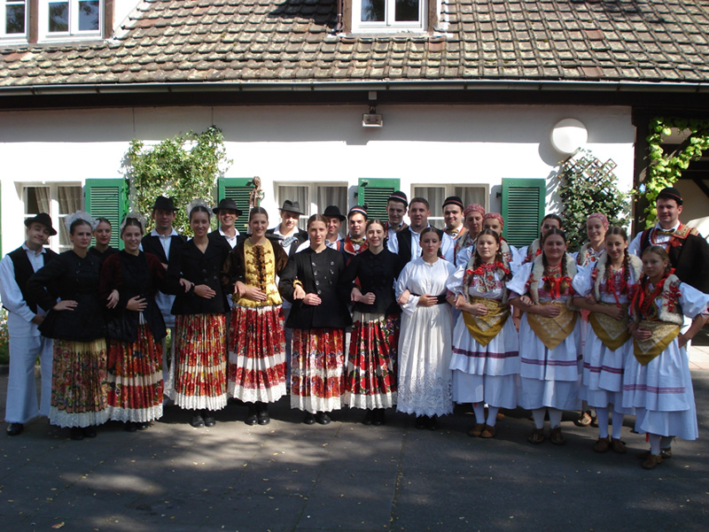

KUD Oštrc, kao jedno od najkvalitetnijih, a zasigurno i najsvestranijih kulturno – umjetničkih društava Samobora i okolice kontinuirano radi od 1979. godine.
Društvo je do danas sudjelovalo na mnogim značajnim folklornim manifestacijama u zemlji i inozemstvu, a osobito je ponosno na nagradu Zagrebačke županije za poseban doprinos u promicanju kulturne baštine.
Među svoje aktivnosti članovi KUD-a ubrajaju radove na obnovi rudnika u mjestu, organizaciju Dana rudarske greblice, te prepoznatljivu prezentaciju na samoborskom fašniku.
